Магнитно-импульсный ускоритель ферромагнитных тел
Теория
Сила F, действующая на ферромагнитный образец, имеющий собственный магнитный момент P, в магнитном поле с индукцией B:
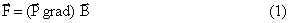
Если в рассматриваемой области вектор магнитной индукции направлен вдоль одной оси z, а величина магнитной индукции изменяется только в направлении координаты z, то сила имеет ненулевую составляющую также вдоль этой координаты:
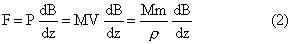
где M - намагниченность (магнитный момент единицы объема), V - объем, m - масса, r - плотность образца.
В соответствии со вторым законом Ньютона:
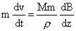
Отсюда для ускорения dv/dt имеем выражение:
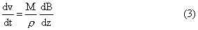
Намагниченность M ферромагнитного образца при увеличении индукции B магнитного поля от нуля до максимума изменяется по нелинейному закону. В слабых полях:
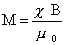
где c - магнитная восприимчивость, m0 = 4p · 10-7 Гн/м - магнитная постоянная При этом:
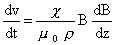
При увеличении магнитной индукции намагниченность достаточно быстро достигает предельной величины MS = BS / m0, где BS - индукция насыщения ферромагнетика. Тогда:
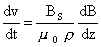
С учетом того, что магнитная восприимчивость ферромагнитных веществ является положительной величиной, следуют два вывода:
1. Ускорение образца положительно только в области, где B · dB/dz > 0, например, магнитная индукция положительна и возрастает.
2. Из формулы (3) следует, что ускорение образца не зависит от его массы. Однако, задача получения требуемых для данного случая сильных магнитных полей усложняется с увеличением объемов поля (т. е. с увеличением массы образца). Поэтому увеличить максимальную достижимую скорость можно, уменьшая массу образца, так как при этом облегчается задача получения магнитного поля с большими значениями индукции и градиента индукции.
Поскольку в рассматриваемом ускорителе индукция возбуждаемого магнитного поля достаточно велика, можно считать, что MS = BS / m0. Тогда:
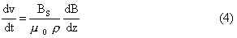
Предположим, что индукция магнитного поля, создаваемого ускорителем, растет линейно от нуля до максимума (B0) на участке длиной s. При этом предположении для градиента индукции можно записать соотношение:
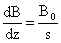
Поэтому:
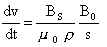
Поскольку ускорение dv/dt при таких условиях представляет постоянную величину, для максимально достижимой скорости v0 на участке s из известного выражения:
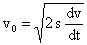
следует:
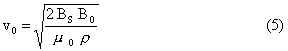
Для железа BS ~ 1.5 Тл, r ~ 7870 кг/м3. Полагая B0 = 10 Тл, получим:
v0 ~ 55 м/с
Способы увеличения максимально достижимой скорости
1. Применение более сильных магнитных полей. Следует заметить, что поля с максимальной индукцией до 10 Тл получаются довольно простыми средствами [7]. Получение более сильных магнитных полей сопряжено с существенно большими трудностями и затратами. Причем, даже при увеличении максимальной индукции в 10 раз (до 100 Тл), что представляет весьма сложную задачу, максимально достижимая скорость возрастает всего в три с небольшим раза.
2. Применение образцов с большими значениями индукции насыщения, например, из сплава железа с кобальтом 49КФ (пермендюр, BS ~ 2.4 Тл, r ~ 8200 кг/м3). В ускорителе с B0 = 10 Тл максимально достижимая скорость образцов из пермендюра в соответствии с формулой (5) равна примерно 68 м/с. Очевидно, существенной прибавки в скорости путем подбора материала образца получить не удастся.
3. Использование многоступенчатых ускорителей. Каждая ступень может дать прибавку к скорости при условии достижения синхронизации включения магнитного поля ступени с прохождением образца через нее. Возможно, это единственный способ многократного увеличения скорости образца.
Рассмотрим более подробно вариант многоступенчатого ускорителя. Пусть все n ступеней имеют одинаковую конструкцию. Номера ступеней 1, 2, …, n. Максимальная скорость после прохождения k-й ступени v0 k., а после прохождения k+1–й – v0 k+1. Тогда из соотношения:
получим:
где v0 1 – скорость образца после прохождения первой ступени, определяемая формулой (5). Методом математической индукции получаем формулу:
В соответствии с вышеизложенным скорость образца растет прямо пропорционально квадратному корню от количества ступеней ускорителя, то есть, например, чтобы достичь десятикратного увеличения скорости (примерно до 500 м/с), потребуется построить ускоритель с сотней одинаковых ступеней, что вряд ли реализуемо на практике. Практически может быть достаточно легко реализован вариант с двумя - четырьмя ускоряющими ступенями. При этом для образца из железа достижимая конечная скорость составит примерно 70 ... 100 м/с.
Приблизительный расчет эффективности ускорителя
Оценим эффективность (коэффициент полезного действия) ускорителя (отношение кинетической энергии образца к энергии, затраченной на его разгон) на основе цилиндрического соленоида, в который от генератора мощных импульсов тока [2 - 4] подается импульс тока необходимой амплитуды и длительности. Предположим, производится разгон стального цилиндра диаметром 10 мм длиной 10 мм. Плотность стали положим равной 7870 кг/м3. Тогда масса цилиндра m составит примерно 0.00618 кг (6.18 г). Если в соответствии с формулой (5) цилиндр разгоняется до скорости v0 = 55 м/с, то его кинетическая энергия при этом
Пусть в ускорителе используется цилиндрический соленоид внешним диаметром 30 мм высотой 30 мм с отверстием диаметром 10 мм, намотанный медным проводом. Для расчета характеристик соленоида можно воспользоваться программой Coil [1]. Чтобы получить магнитную индукцию 10 Тл в центре соленоида по его обмотке надо пропускать ток плотностью около 1000 А/мм2. Рассеиваемая в обмотке мощность при этом составит примерно 500000 Вт. Расстояние от края до центра соленоида s = 0.015 м стальной цилиндр пройдет за интервал t0, удовлетворяющий следующему уравнению:
Так как
то, исключая отсюда ускорение dv/dt, получаем:
Для s = 0.015 м, v0 = 55 м/с t0 ≈ 0.000386 с (0.386 мс). Тогда затраченная на разгон энергия будет равна 500000 Вт ∙ 0.386 мс ≈ 193 Дж. Эффективность ускорителя при этом составит 9.35/193 ≈ 5 %. Оптимизируя конструкцию ускорителя, можно ее несколько повысить, но вряд ли существенно.
Ссылки:
15.05.2008
07.03.2010
01.06.2016
Альтернативные источники
энергии
Компьютеры и
Интернет
Магнитные поля
Механотронные системы
Перспективные разработки
Электроника и
технология